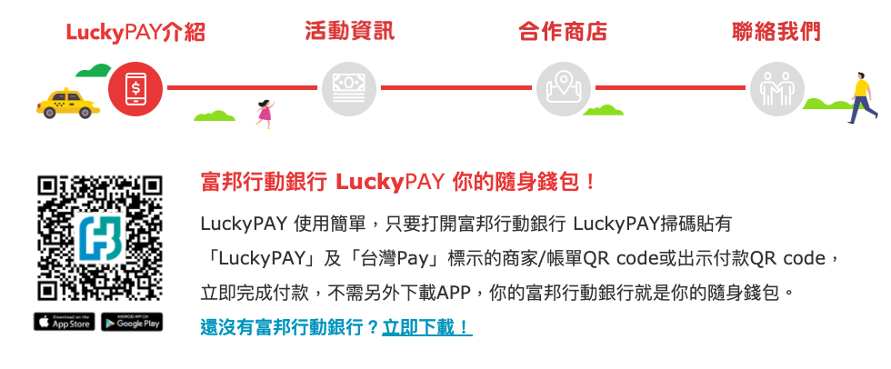
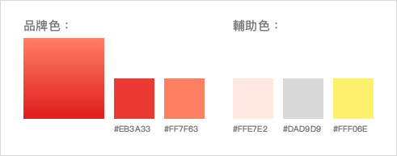
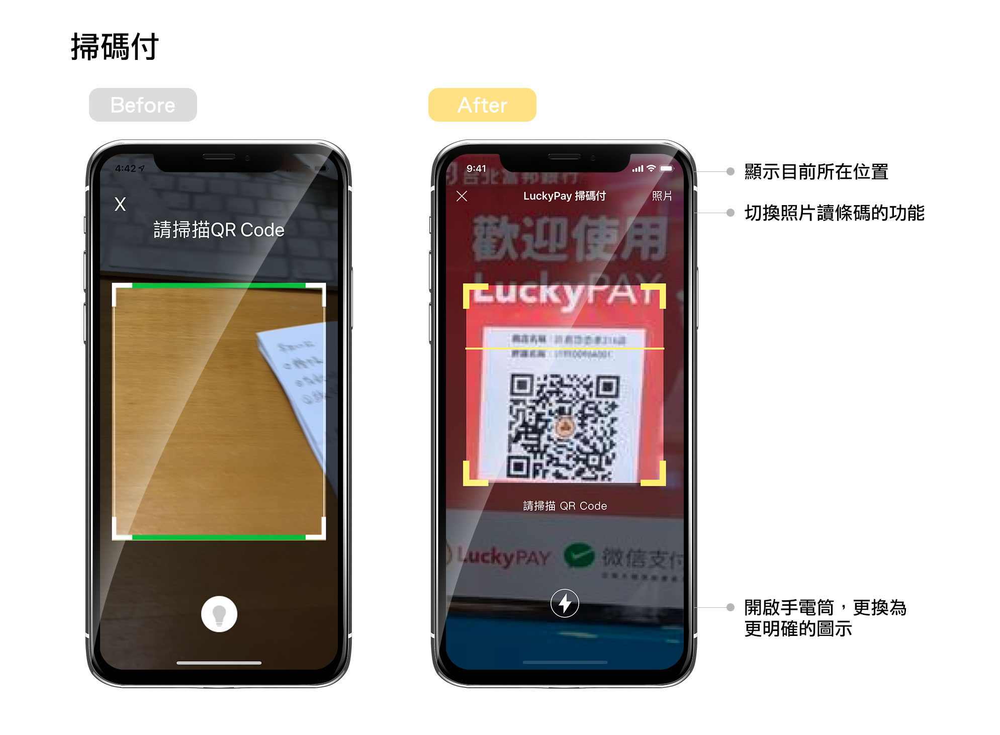

開始
一直以來是台北富邦的長期用戶，自從2018首頁大改版後發現新增了不少功能～這次改版主推：
- 1. 首頁客製化
- 2. 邦你寄，3. 邦你存，4. e家付：這三個都是主打e化「e家人分行」，針對親子客群所推出的服務。
- 4. LuckyPay：行動支付
這次新增了好幾個服務，新服務的設計都跳脫了原有的視覺規範，LuckyPay更是獨立在下方的TabBar的選單中，可見其重要性，但在點開的瞬間發現很多可以優化的地方。
包山包海App是否符合使用者的需求？
對於擁有過多功能的app，最大的問題就是會影響開啟或使用的速度，然而在看過新聞後才知道他們的策略：
『LuckyPAY只要登入北富銀行動銀行就可以自動帶出用戶的帳戶和信用卡讓用戶選擇綁定，省去輸入帳號的繁瑣，且客戶可以直接在富邦行動銀行裡進行帳戶、信用卡、行動支付的交易查詢，對於不喜歡安裝太多App的用戶來說，多一個能夠解決痛點、提升使用行動支付使用意願的選項。』
LuckyPay特色：
- 目前主推：便利商店、LucktPay一條街（台北忠孝東路216巷超過50家店使用）
- 店家QR code碼 與微信支付整合，可共用
- 支援台灣pay可使用的支付
- 不需要刷卡設備，只要張貼 QR code 或手機安裝好收款 APP 即可收款
- 沒有信用卡的學生也可以使用北富銀的帳戶直接支付
既然如此就僅只能針對此服務來優化。
原先的資訊架構：
主要分兩大功能切換進入，劃分收款＆付款兩大族群。

問題分析：
- 使用率：在app的評論當中，使用者最常抱怨的是閃退，與過度的更新，並沒有人提及到LuckyPay使用上的問題，讓人不經懷疑此服務的使用率?!
- 選單層級：主要以兩大功能來做劃分：『付款』＆『收款』，使用頁籤的方式來切換，如果需要收款需要多點及一層選單才能進入。
- UI的誤導：「掃碼」與「秀碼」兩大按鈕佔據了很大的畫面，直覺上並不會把它當作按鈕，一開始還錯以為收款的秀碼那張圖是可以掃描的...
修改後的資訊架構：
針對以上的問題來改善：
- 網路上有相關的「活動資訊」與「合作店家」的介紹，但在app卻無法得知，因此增加「優惠活動」、「最新消息通知」、「合作店家」的資訊，並建議以推播的方式增加使用性。
 - 分成簡單的兩大功能，好處是簡潔易懂，但對於要收款這部分總需要多一層頁面點擊才可以進入收款的相關選項。希望可以減少點擊進入頁面的動作。
- 進入的頁面層級減少，改成路徑是廣而淺，拉出主要功能集中在首頁上呈現，次要功能收進裡層。

色彩計畫：
使用原有的紅色為主，稍微調亮並做漸層的變化，增加活潑性。

設計稿呈現：
首頁改變：
- 上方的活動大圖輪播，讓使用者即時知道目前優惠活動。
- 4個最主要的大功能放在下方，方便快速點選，其餘的功能拉出來放在畫面中間。
- 最新消息：付款、轉帳、收款、優惠等的相關訊息通知，如有未讀會出現紅點提醒。

掃碼付：
- 掃碼付上方多了照片選擇，將「選碼付」的功能收至此。

秀碼付：
- 原付款密碼輸入的畫面下方有確認或取消鈕，直接省略，讓使用者輸入完密碼後即可進入。
- 進入秀碼畫面，將帳戶資訊改放至上方，並提供手機載具秀出的功能，右上方可快速切換至掃碼畫面。

轉帳付款：
- 直接把QR-code(掃碼付)的轉帳方式加入選單內，方便快速掃碼轉帳。
- 上方進度條清楚的顯示目前轉帳進度。
- 第一步拿掉使用性不大的「清除」按鈕，讓使用者專注在此操作上的執行。
- 在進行付款交易驗證時，不需要另外跳出畫面來輸入，而是保留匯款的所有資訊，在底下展開的方式呈現。
- 在第二步驟的取消按鈕都改為「修改」，方便使用者在發現錯誤時，以修改的方式回到上一步。
- 完成交易後，把所有可執行的動作統一放在下方，並新增「再次轉帳付款」的按鈕，放便使用者快速再度轉帳。

Prototype 展示
結語：
在這次的優化過程中，畢竟不是在團隊中工作，可能有商業考量上的盲點，僅希望能讓人們可以有更好的產品使用體驗，能真的盡一份心力。